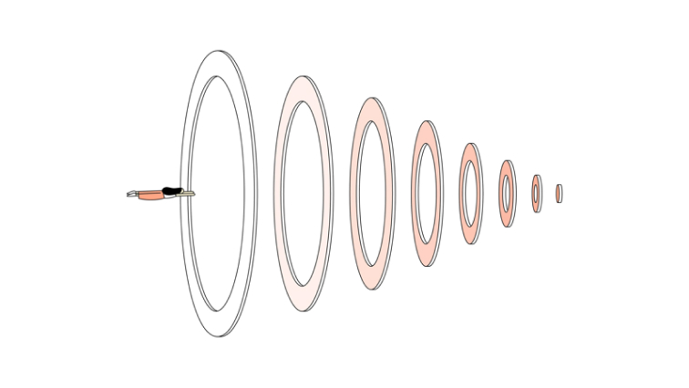
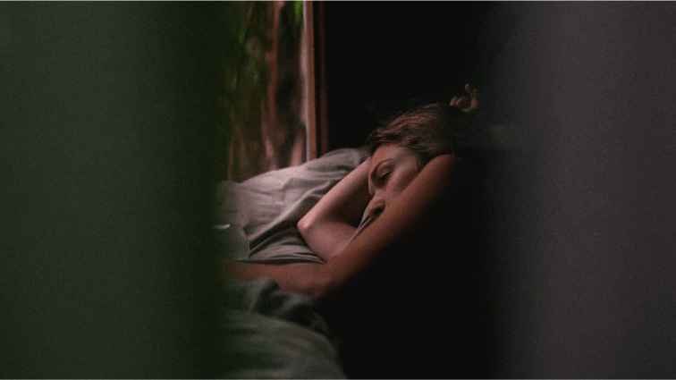

 THE NEW YORK TIMES — #FOCUS — 10 MIN Cal Newport: How to Actually, Truly Focus on What You're Doing By Tim Herrera YOUTUBE — #SLEEP — 1H 55MIN JRE #1109 - Matthew Walker BY JOE ROGAN  THE GUARDIAN — #SLEEP — 10 MIN Sleep: How Much Do We Really Need? BY HANNAH DEVLIN YOUTUBE — #FOCUS — 9 MIN I Quit Social Media For 30 days BY MATT D'AVELLA